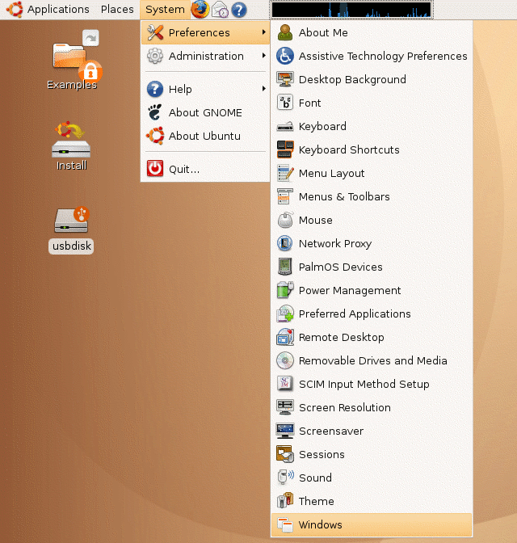
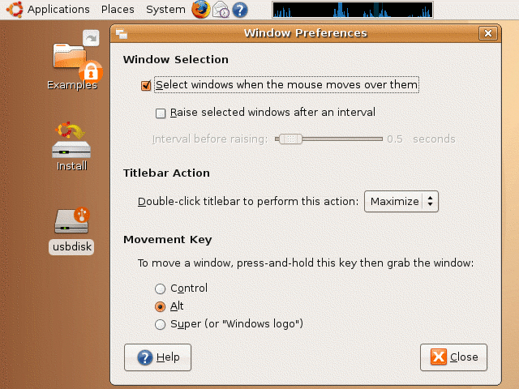

| vlsitechnology.org /Live CD help /window prefs | |
Window preferences | |
Linux help
Windows help
Linux Live CD
Focus follows mouse is a window GUI option where the window underneath the mouse becomes the active window and receives keyboard input, when the mouse arrow moves over it.
The normal arrangement in Windows and MAC computers is for a window to becomes active only when the mouse is over it and the left mouse button is clicked. In Windows it is possible to install a Windows Powertoy that allows a focus follows mouse behaviour. In the MAC OS this is not possible, even as a user choice. Apple are the experts after all and there is no need for the user to choose different.
The Ubuntu Live CD by default mimics the Windows and MAC behaviour. This can lead to a very clicky interface and I recommend enabling focus follows mouse. Select it from the
System -> Preferences -> Windows |
menu.

Select the option
Select windows when the mouse moves over them |
and Close the dialog.
